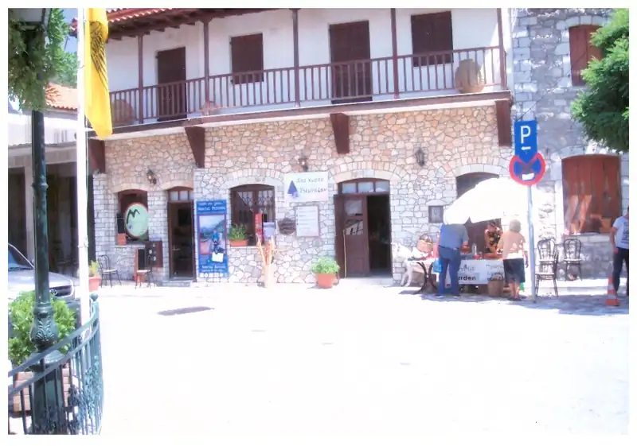
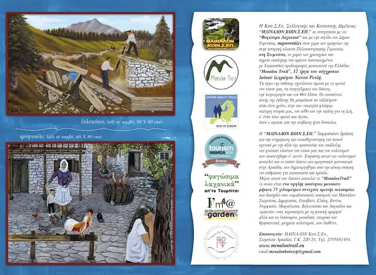

ΕΚΘΕΣΗ: ΣΤΕΜΝΙΤΣΑ

Από 5 Αυγούστου έως 10 Σεπτεμβρίου 2017
Κεντρική Πλατεία Πελοποννησιακής Γερουσίας, Στεμνίτσα
Δεκαοκτώ (18) έργα του Νώντα Ρεντζή φιλοξενούνται στο χώρο της "Μαίναλον Κοιν.Σ.Επ." της πρώτης Κοινωνικής Συνεταιριστικής Επιχείρησης της Πελοποννήσου στην κεντρική πλατεία Πελοποννησιακής Γερουσίας στην Στεμνίτσα, το χωριό των χρυσοχόων και το σημείο εκκίνησης του πρώτου πιστοποιημένου με Ευρωπαϊκές προδιαγραφές μονοπατιού της Ελλάδας: "Menalon Trail", μήκους 75 χιλιομέτρων συνεχούς ορεινής πεζοπορίας που διασχίζει τους ορεινούς παραδοσιακούς οικισμούς του Μαινάλου: Στεμνίτσα, Δημητσάνα, Ζυγοβίστι, Ελάτη, Βυτίνα, Νυμφασία, Μαγούλιανα, Βαλτεσινίκο και Λαγκάδια.
Έχουν επιλεχθεί έργα του καλλιτέχνη που έχουν σχέση με το ορεινό μονοπάτι και τα επαγγέλματα του δάσους, την κτηνοτροφία και τον Θεό Πάνα.

Η φετινή χρονιά είναι πολύ σημαντική για την ανάπτυξη της πεζοπορίας στην Ελλάδα, και ειδικότερα στο πρωτοπόρο Μαίναλο, καθώς εδώ θα φιλοξενηθεί η Πανευρωπαϊκή Συνδιάσκεψη πιστοποιημένων μονοπατιών στις 4-6 Νοεμβρίου 2017.
Στο πλαίσιο αυτό έχει δρομολογηθεί σειρά εκδηλώσεων όπως η πρώτη διεθνής εβδομάδα πεζοπορίας "LQT Week" (Leading Quality Trail) από 3-10 Σεπτεμβρίου 2017 με πεζοπόρους από όλον τον κόσμο.
Διοργανωτής η Κοινωνική Επιχείρηση του Μαινάλου και εντός των επομένων ημερών θα ανακοινωθεί ολοκληρωμένο πακέτο διαμονής και πεζοποριών στο διάστημα 3-10 Σεπτεμβρίου σε συνεργασία με ξενοδοχεία και επιχειρήσεις του μονοπατιού και τον Δήμο Γορτυνίας.
Ο λαϊκός ζωγράφος με τους πίνακες που θα εκθέσει στην Στεμνίτσα, μέσα από την λαχτάρα του για την φύση και μια εποχή που οι άνθρωποι ήταν πιο κοντά της και δεμένοι μαζί της, θα μας δείξει τα δικά του μονοπάτια, που μας ενώνουν... στον πόθο και την αγάπη για την ζωή.
